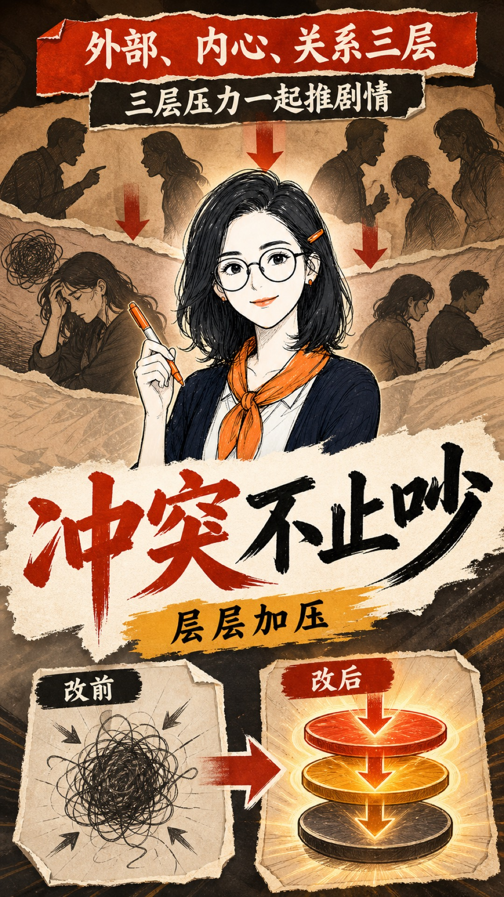
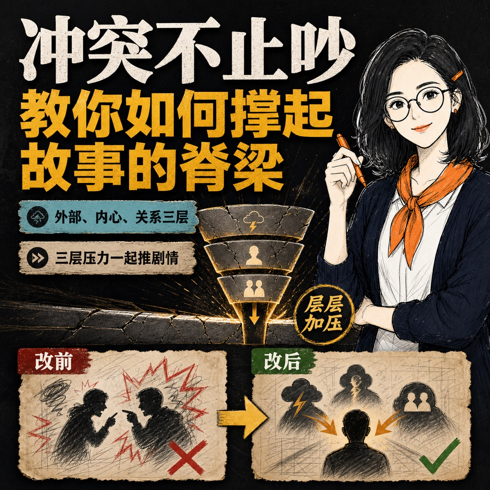
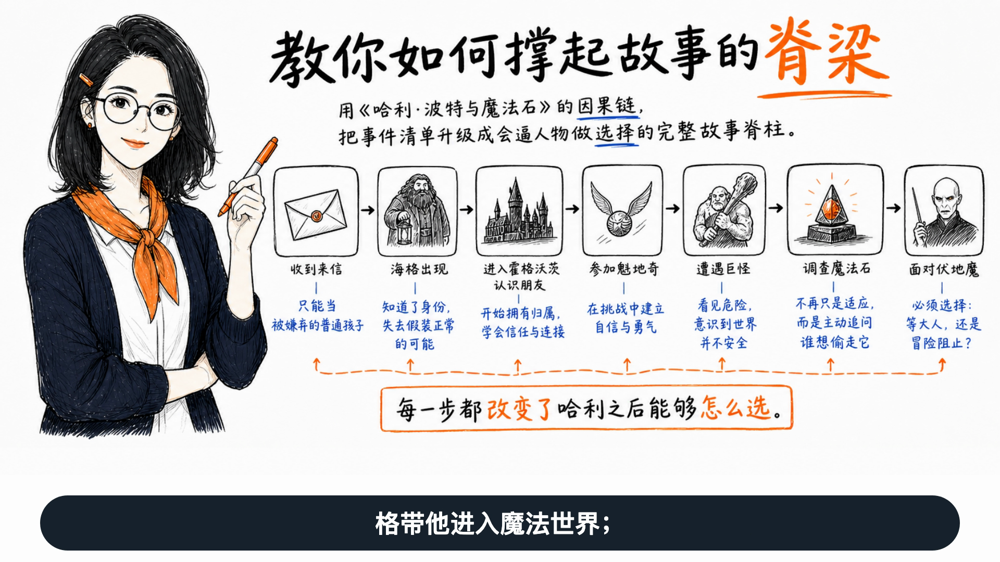
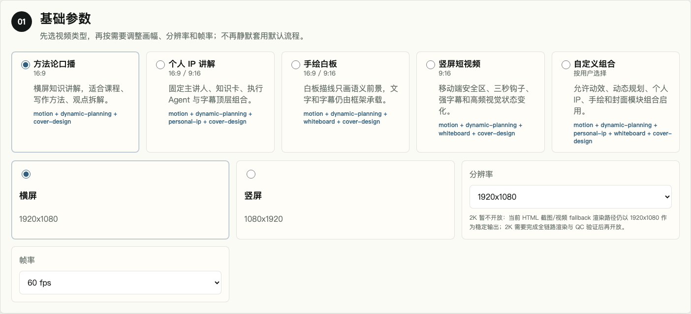
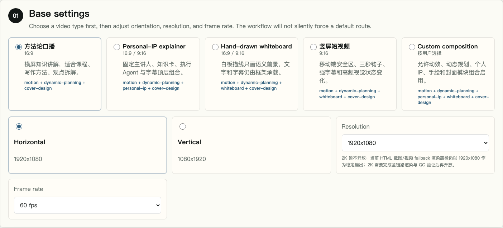

CODEX VIDEO WORKFLOW
一份 Brief生成一整套视频
从内容理解到动效、字幕、个人 IP、手绘白板、封面与质量证据。
可审阅可修改可追溯



一条完整生产线
HOW IT WORKS
输入之后，能力自动路由
每一步都不是黑盒跳转，而是产生一个可查看、可继续修改的中间结果。
内容理解
识别叙事目的
页面拆解
一页一个重点
视觉路由
匹配素材与动效
语音字幕
统一时间轴
封面适配
原生比例构图
质量检查
交付可复核
视频字幕封面配置质量证据
SEMANTIC MOTION
动效必须解释内容
不是让画面更忙，而是让顺序、差异、关系和结论更快被理解。
1234
之前之后
含义：差异与选择内容视觉结论
含义：因果与关联背景信息补充信息次要数据延伸说明核心结论
含义：注意力与重点TWO MODES · BILINGUAL
配置清楚，自动化才可信
半自动模式可以逐项调整；全自动模式使用同一份生产合同直接执行。
半自动配置全自动执行

简体中文
EnglishPERSONAL IP · WHITEBOARD
横屏与竖屏，都能原生手绘
稳定背景之上依次描线、圈点、回填；人物与字幕始终保持清晰。
NATIVE COVER DESIGN
同一主题，三种原生构图
比例变化时重新安排标题、人物与证据，而不是机械裁切。
内容承诺视觉锚点比例安全区
横版 16:9CAPTION SYSTEM
68 种字幕 · 8 类语义任务
先看全量动态，再看两个可读实例
实例一 · 节奏强调
真正重要的，是这句话
实例二 · 双语玻璃
从内容到成片FROM BRIEF TO DELIVERY
68 个动态缩略效果已在画面中运行
ONE BRIEF · COMPLETE DELIVERY
从内容，
到可审阅成片
核心能力不止是生成，而是把整个生产过程组织起来。